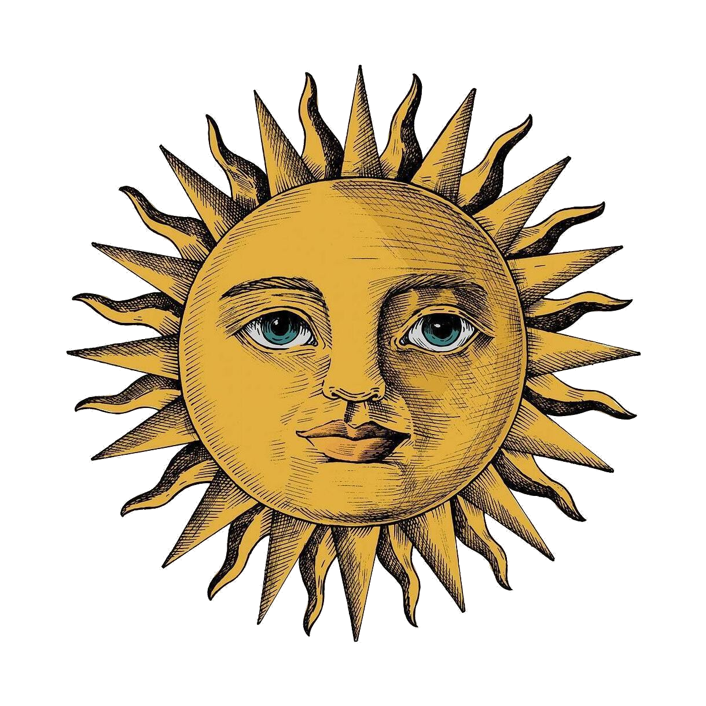

My twenty-three laps around the sun have been spent:
walking
I've traveled 5,000 miles
a pie
via the Appalachian and Pacific Crest Trails
walking
I've traveled 5,000 miles
a pie
via the Appalachian and Pacific Crest Trails